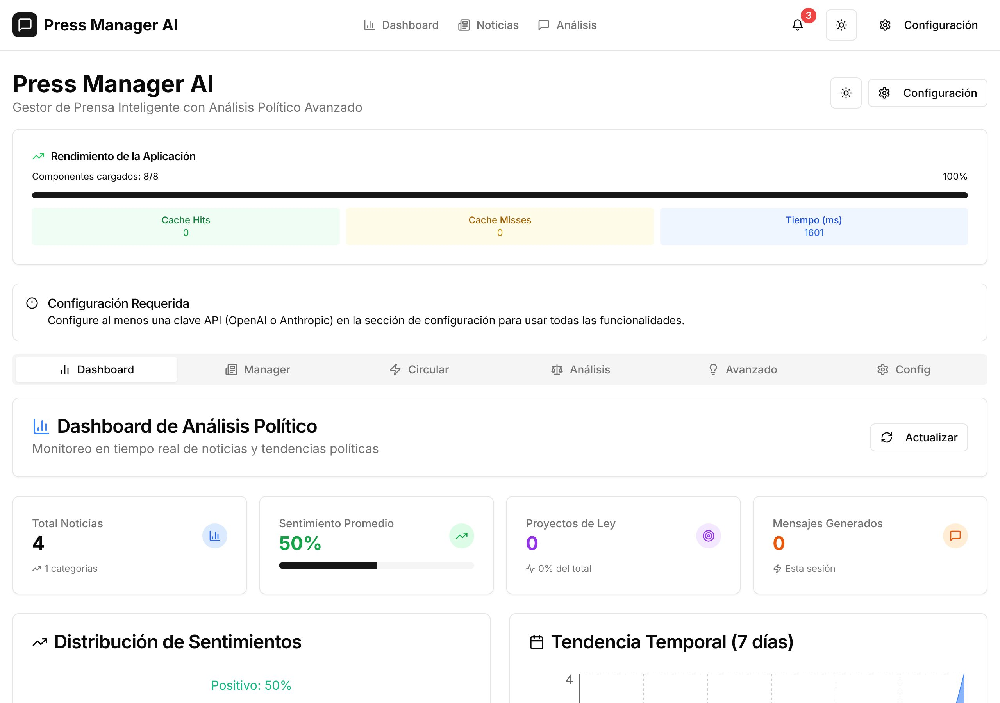
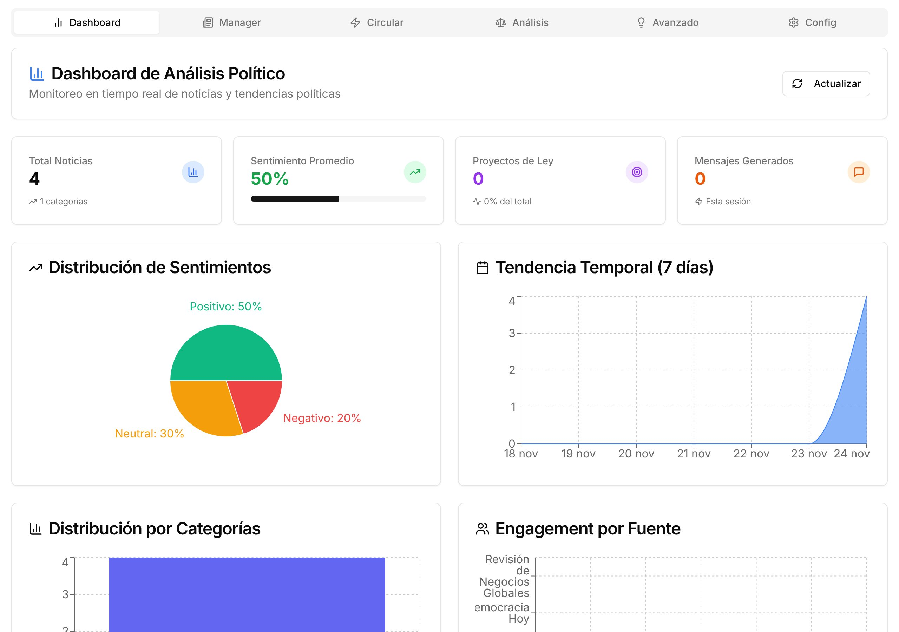
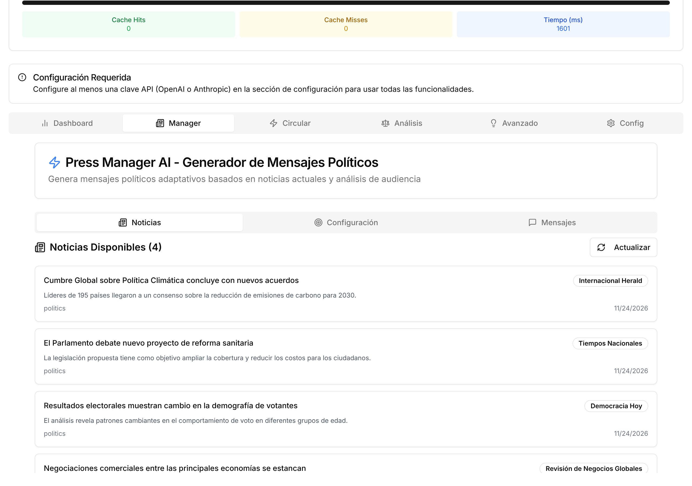
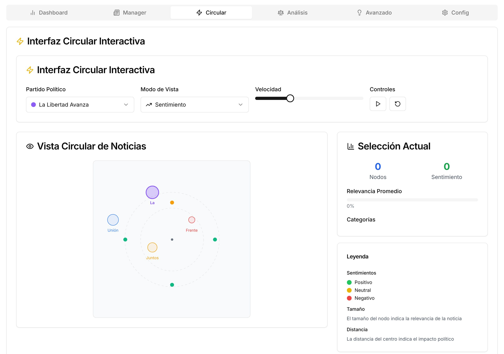
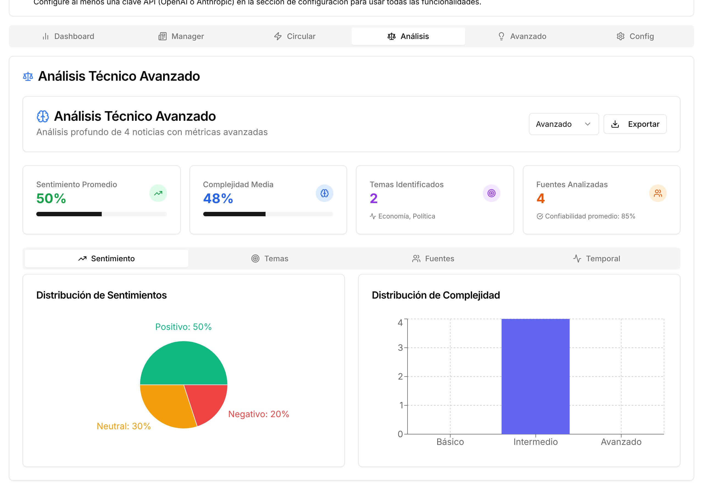
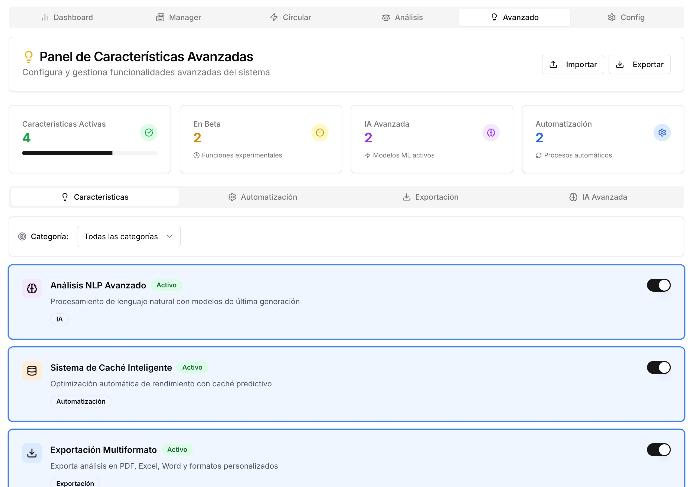
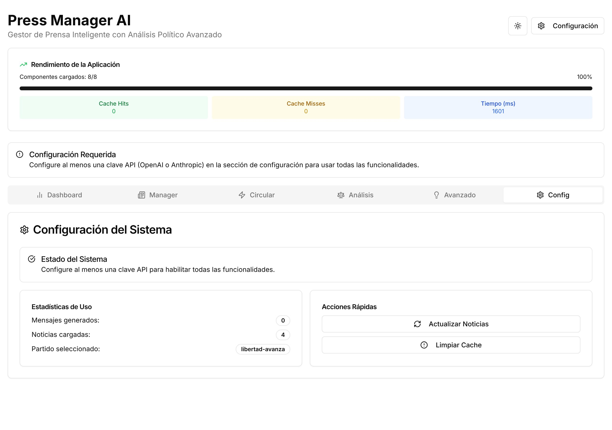

Un agente de comunicación política: lee noticias, mide sentimiento y relevancia, y con un LLM (Anthropic u OpenAI) propone mensajes adaptados a cada partido y audiencia. A political communication agent: it reads the news, measures sentiment and relevance, and uses an LLM (Anthropic or OpenAI) to draft messages adapted to each party and audience.
Capturas de la app real, sin clave de IA cargada: las noticias son datos de ejemplo de la propia app y la generación de mensajes con LLM se activa al cargar una clave en Configuración. Screenshots of the real app with no AI key loaded: the news items are the app's own sample data, and LLM message generation turns on once a key is added in Settings.
Cabecera, estado de carga de los módulos y aviso para configurar la clave de IA. Las claves de OpenAI o Anthropic las pone cada usuario y quedan en su navegador.Header, module loading status and a prompt to add an AI key. Each user brings their own OpenAI or Anthropic key, stored in their own browser.

Noticias, sentimiento promedio, proyectos de ley y mensajes generados, con gráficos de sentimiento, tendencia de 7 días, categorías y fuentes.News count, average sentiment, bills and generated messages, with charts for sentiment, 7-day trend, categories and sources.

El generador de mensajes: elegís una noticia, configurás partido y audiencia, y el LLM propone un mensaje adaptado.The message generator: pick a news item, set party and audience, and the LLM drafts an adapted message.

Las noticias como nodos alrededor de los partidos: el tamaño indica relevancia y la distancia al centro, el impacto político.News as nodes around the parties: size shows relevance and distance from the center shows political impact.

Sentimiento, complejidad, temas y confiabilidad de las fuentes, con distribución por sentimiento y por complejidad.Sentiment, complexity, topics and source reliability, with sentiment and complexity distributions.

Panel para activar y configurar automatizaciones, exportación y funciones de IA experimentales.Panel to enable and configure automations, export and experimental AI features.

Estado del sistema, estadísticas de uso y acciones rápidas como actualizar noticias o limpiar la caché.System status, usage stats and quick actions such as refreshing news or clearing the cache.
